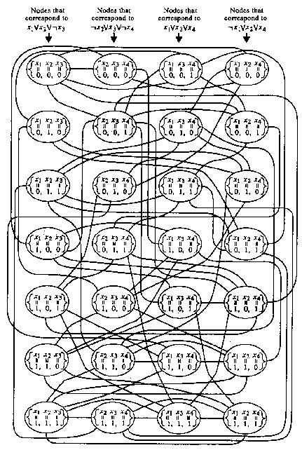

| x1 + 1 | = | 1 | ||
 | ||||
| xm + m | = | 1 | ||
| c1 1 + c1 2 + c1 3 + y1 1 + y1 2 | = | 3 | ||
| ck 1 + ck 2 + ck 3 +yk 1 +yk 2 | = | 3 |
The 0 - 1 Knapsack Problem
From Boolean Expression to a System of Linear Equations
From a System of Linear Equations to an Instance of the 0 - 1 Knapsack Problem
The Clique Problem
The NP-hardness of the satisfiability problem was demonstrated by exhibiting the existence of a polynomial time reduction, from each problem in NP to the satisfiability problem. A similar approach was used for showing the NP-hardness of the 3-satisfiability problem. However, in general the proof of the NP-hardness of a given problem need not be generic in nature, but can be accomplished by polynomial time reduction from another NP-hard problem.
A proof by reduction is possible because the composition of polynomial time reductions is also a polynomial time reduction. That is, if a problem Ka is reducible to a problem Kb in T1(n) time, and Kb is reducible to a problem Kc in T2(n) time, then Ka is reducible to Kc in T2(T1(n)) time. Moreover, T2(T1(n)) is polynomial if T1(n) and T2(n) are so.
The proofs of the following two theorems exhibit the NP-hardness of the problems in question by means of reduction.
Theorem 5.4.1 The problem defined by the following pair, called the 0 - 1 knapsack problem, is an NP-complete problem.
Proof Consider a Turing machine M that on any given instance (a1, ¼, aN , b) of the problem nondeterministically assigns values from {0, 1} to v1, ¼ , vN , checks whether a1v1 + · · · + aN vN = b, and accepts the input if and only if the equality holds. M can be of polynomial time complexity. Therefore the 0 - 1 knapsack problem is in NP.
To show that the 0 - 1 knapsack problem is NP-hard consider any instance E of the 3-satisfiability problem. Let x1, ¼ , xm denote the variables in the Boolean expression E. E is a conjunction c1 Ù · · · Ù ck of some clauses c1, ¼ , ck. Each Ci is a disjunction ci 1 Ú ci 2 Ú ci 3 of some literals ci 1, ci 2, ci 3. Each ci j is a variable xt, or a negation ¬xt of a variable xt, for some 1 £ t £ m.
From Boolean Expression to a System of Linear Equations
From the Boolean expression E a system S of linear equations of the following form can be constructed.
| x1 + 1 | = | 1 | ||
| ||||
| xm + m | = | 1 | ||
| c1 1 + c1 2 + c1 3 + y1 1 + y1 2 | = | 3 | ||
| ck 1 + ck 2 + ck 3 +yk 1 +yk 2 | = | 3 |
The system S has the variables x1, ¼ , xm,  1, ¼ ,
1, ¼ ,  m, y1 1, ¼ , yk 2. The variable xt in S
corresponds to the literal xt in E. The variable t in S corresponds to the literal ¬xt in E.
ci j stands for the variable xt in S, if xt is the jth literal in Ci. ci j stands for the variable
m, y1 1, ¼ , yk 2. The variable xt in S
corresponds to the literal xt in E. The variable t in S corresponds to the literal ¬xt in E.
ci j stands for the variable xt in S, if xt is the jth literal in Ci. ci j stands for the variable
 t in S, if ¬xt is the jth literal in Ci.
t in S, if ¬xt is the jth literal in Ci.
Each equation of the form xi +  i = 1 has a solution over {0, 1} if and only if
either xi = 1 and
i = 1 has a solution over {0, 1} if and only if
either xi = 1 and  i = 0, or xi = 0 and
i = 0, or xi = 0 and  i = 1. Each equation of the form
ci 1 + ci 2 + ci 3 + yi 1 + yi 2 = 3 has a solution over {0, 1} if and only if at least
one of the equalities ci 1 = 1, ci 2 = 1, and ci 3 = 1 holds. It follows that the
system S has a solution over {0, 1} if and only if the Boolean expression E is
satisfiable.
i = 1. Each equation of the form
ci 1 + ci 2 + ci 3 + yi 1 + yi 2 = 3 has a solution over {0, 1} if and only if at least
one of the equalities ci 1 = 1, ci 2 = 1, and ci 3 = 1 holds. It follows that the
system S has a solution over {0, 1} if and only if the Boolean expression E is
satisfiable.
From a System of Linear Equations to an Instance of the 0 - 1 Knapsack Problem
The system S can be represented in a vector form as follows.
The variables z1, ¼ , z2m+2k in the vector form stand for the variables x1, ¼ , xm,  1, ¼ , m,
y1 1, ¼ , yk 2 of S, respectively. ai j is assumed to be the coefficient of zj in the ith equation
of S. bi is assumed to be the constant in the right-hand side of the ith equation in
S.
1, ¼ , m,
y1 1, ¼ , yk 2 of S, respectively. ai j is assumed to be the coefficient of zj in the ith equation
of S. bi is assumed to be the constant in the right-hand side of the ith equation in
S.
Similarly, the system S can also be represented by the equation H of the following form.
In H, each aj stands for the integer whose decimal representation is a1 j · · · am+k j. Similarly, b stands for the integer whose decimal representation is b1 · · · bm+k. The representation is possible because the sum ai 1 + · · · + ai 2m+2k is either equal to 2 or to 5 for each 1 £ i £ m + k. That is, the ith digit in the sum c = a1 + · · · + a2m+2k depends only on the ith digits of a1, ¼ , a2m+2k. It follows that S is satisfiable over {0, 1} if and only if H is satisfiable over {0, 1}.
As a result, the instance E of the 3-satisfiability problem is satisfiable if and only if the
instance (a1, ¼, a2m+2k, b) of the 0 - 1 knapsack problem has a positive solution.
Moreover, a polynomially time-bounded, deterministic Turing transducer can similarly
construct corresponding instance of the 0 - 1 knapsack problem, from each instance
E of the 3-satisfiability problem. Consequently, the NP-hardness of the 0 - 1
knapsack problem follows from the NP-hardness of the 3-satisfiability problem. 
Example 5.4.1 Consider the Boolean expression E of the form (x1Úx2Ú¬x3)Ù(¬x2Úx3Ú¬x4)Ù(x1Úx3Úx4)Ù(¬x1Úx2Úx4). E is an instance of the 3-satisfiability problem. The Boolean expression is satisfiable if and only if the following system S of linear equations has a solution over {0, 1}.
On the other hand, the system S has a solution over {0, 1} if and only if the equation H of the following form has a solution over {0, 1}. The leading zeros are ignored in the constants of H.
The expression E is satisfiable if and only if the instance (10001010, 1001001,
100110, 10011, 10000001, 1000100, 101000, 10100, 1000, 1000, 100, 100, 10,
10, 1, 1, 11113333) of the 0 - 1 knapsack problem has a positive solution.
The previous examples of NP-complete problems deal with Boolean expressions and linear equations. The following example deals with graphs.
Theorem 5.4.2 The problem defined by the following pair, called the clique problem, is an NP-complete problem.
Proof Consider a Turing machine M that on a given instance (G, k) of the clique problem proceeds as follows. M starts by nondeterministically choosing k nodes in G. Then it determines whether there is an edge in G between each pair of the k chosen nodes. If so, then M accepts the input; otherwise it rejects the input. M is of polynomial time complexity. Consequently the clique problem is in NP.
To show the NP-hardnes of the clique problem consider any instance E of the 3-satisfiability problem. As in the proof of the previous result, let x1, ¼ , xm denote the variables in the Boolean expression E. E is a conjunction c1 Ù · · · Ù ck of some clauses c1, ¼ , ck. Each Ci is a disjunction ci 1 Ú ci 2 Ú ci 3 of some literals ci 1, ci 2, ci 3. Each ci j is a variable xt, or a negation ¬xt of a variable xt, for some 1 £ t £ m. From the Boolean expression E a graph G of the following form can be constructed.
The graph G has a node corresponding to each pair (ci, (d1, d2, d3)) of an assignment (d1, d2, d3) that satisfies a clause Ci. The node that corresponds to a pair (ci, (d1, d2, d3)) is labeled by the set {xi 1 = d1, xi 2 = d2, xi 3 = d3}, where xi 1, xi 2, xi 3 are assumed to be the variables used in ci 1, ci 2, ci 3, respectively. It follows that for each Ci, the graph G has seven associated nodes.
The graph G has an edge between a node labeled by a set {xi 1 = d1, xi 2 = d2, xi 3 = d3} and a node labeled by a set {xj 1 = d'1, xj 2 = d'2, xj 3 = d'3} if and only if no variable xt has conflicting assignments in the two sets, 1 £ t £ m.
By construction, no pair of nodes associated with the same clause Ci have an edge between them. On the other hand, the edges between the nodes that correspond to each pair of clauses, relate exactly those assignments to the variables that satisfy both clauses simultaneously. Consequently, the Boolean expression E is satisfiable if and only if G has a clique of size k.
A polynomially time-bounded, deterministic Turing transducer can in a similar way
determine a corresponding instance (G, k) of the clique problem for each instance E of
the 3-satisfiability problem. Therefore, implying the NP-hardness of the clique problem.
Example 5.4.2 Let E be the Boolean expression (x1Úx2Ú¬x3)Ù(¬x2Úx3Ú¬x4)Ù(x1Úx3Úx4)Ù(¬x1Úx2Úx4). Let G be the graph in Figure 5.4.1.
|

|
From the definition of NP-completeness, it follows that P is equal to NP if and only if there is an NP-complete problem in P.
It should be noticed that all the known algorithms, for the NP-complete problems, are in essence based on exhaustive search over some domain. For instance, in the case of the satisfiability problem, an exhaustive search is made for an assignment to the variables that satisfies the given expression. In the case of the 0 - 1 knapsack problem, the exhaustive search is made for a subset of a given multiset {a1, ¼, aN }, whose values sum up to some given value b. In the case of the clique problem, the exhaustive search is made for a clique of the desired size. In all of these cases the search is over a domain of exponential size, and so far it seems this is the best possible for the NP-complete problems.
![- - - - --| --| -- - - - - - -
|10| |01| 00 | 00 | 10| |01| |00| |00|
|0| |0| 1 | 0 | 0|-- |0-- |1-- |0--
|01x1 + |01x2 + 00 x3 + 10 x4 + 00|x1 +|00x2 + |01x3 + |10x4 +
|0| |0| 1 | 0 | 0| |1| |0| |1|
-10- -01- 10-| 11-| 01- -00- -00- -00-
- - - - --| --| -- - - - - - - --
|0| |0| 0 | 0 | 0| |0| |0| |0| 1|
|00| |00| 00 | 00 | 00| |00| |00| |00| 11|
|0y11+ |0y12+ 0 y21+ 0 y22+ 0|y3 1+ |0y32+ |0y41+ |0y42 = 1|
|10| |10| 01 | 01 | 00| |00| |00| |00| 33|
|0| |0| 0 | 0 | 1| |1| |0| |0| 3|
-0- -0- 0- 0- 0- -0- -1- -1- 3-](theory-bk-five50x.gif)